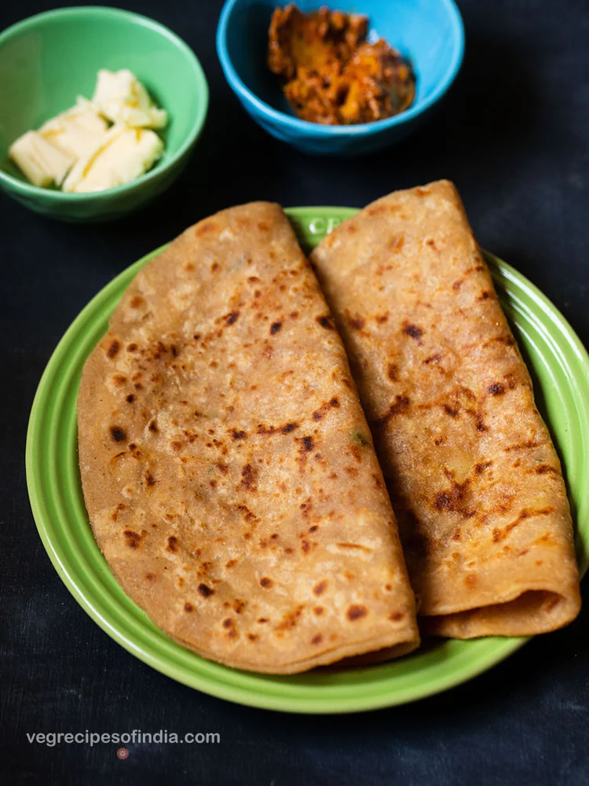

Aloo paratha

If you're a fan of bread and potatoes, you're going to love this Punjabi Aloo Paratha or Aloo ka Paratha. Sometimes spelled Alu Paratha, this potato stuffed flatbread is a popular Indian breakfast that combines two of my favorite starches in a single delectable package. Crisp on the outside and tender on the inside, this humble meal is as comforting as a hug. What's not to love?
Ingredients
For potato stuffing
- 3 to 4 medium potatoes - boiled and mashed
- 1 to 2 green chilies - chopped finely
- 1/4 to 1/2 teaspoon kashmiri red chilli powder or cayenne pepper or paprika, optional
- 1/4 to 1/2 teaspoon Garam Masala
- 1/2 to 1 teaspoon dry mango powder (amchur powder)
- 1 tablespoon finely chopped coriander leaves - optional
- salt as required
- oil or ghee, as required for roasting paratha
For paratha dough
- 2 cups whole wheat flour
- 1/2 teaspoon salt or add as required
- 1 tablespoon oil or ghee (clarified butter)
- water as required for kneading
Instructions
Making potato stuffing
- First boil the potatoes and peel them. You can boil or steam the potatoes in a pressure cooker, steamer or electric cooker.
- Chop and then mash the potatoes with a potato masher.
- The potatoes should be mashed very well. There should be no lumps or small pieces in it.
- Now add the chopped green chilies, garam masala powder, red chili powder, dry mango powder and salt.
- Mix the spice powders and green chilies with the mashed potatoes very well. Check the taste and add more salt or red chili powder or dry mango powder as per your taste.
Kneading dough
- In another bowl or pan, take whole wheat flour (atta).
- Make a well in the center. Add salt, oil and about half of the water.
- Bring the mixture together and knead into a smooth soft dough.
- Cover and keep the dough aside for 20 to 30 minutes.
Stuffing and rolling
- Pinch two small balls from the dough. Flatten them and dust with whole wheat flour.
- With a rolling pin, roll them into about 4 to 5 inches diameter rounds . Try making both the rounds of the same size.
- On one of the rolled dough circle, place the potato stuffing in the center and keep about 1 inch empty space from the sides.
- Gently place the second circle on top.
- Press and seal the edges with your fingertips.
- Dust some flour on the stuffed paratha and roll into a round of about 7 to 8 inches in diameter or about the size of a normal roti or chapati.
Roasting
- On a hot tava (tawa or skillet or griddle) place the rolled paratha.
- The tawa or skillet be hot and not at a low temperature. Cooking parathas at a low flame will harden them. Parathas ideally are crisp as well as soft.
- When the base is partly cooked, flip the alu paratha using a spatula or tongs.
- Spread some ghee on the partly cooked part.
- Flip again and this time this side has to be cooked more than the previous side. You will see brown spots on the paratha.
- Spread some ghee on this side too. A well made and well roasted aloo ka paratha will puff up.
- Flip again once or twice till both the sides of aloo paratha are cooked properly. You should see crisp brown spots on the paratha.
- You can also press the paratha edges with a spatula or spoon, so that they are fried well. As some time, the paratha edges are not cooked well so keep this point in mind.
- Make all aloo ke parathe this way and stack them up in a roti basket or casserole.
- You can also serve the aloo paratha directly from the tawa (skillet) straight in the serving plate. Serve some extra butter on the side, along with mango pickle or lemon pickle or garlic pickle or some yogurt.
- If you are serving them as an evening snack then you can also serve them with a cup of hot tea or lassi.
Notes
- Adding oil or ghee while kneading the dough makes the parathas soft.
- The aloo stuffing mixture can be made according to your taste and liking. You can also add roasted cumin powder (jeera powder), rock salt, carom seeds, mint leaves and coriander powder.
- To the aloo stuffing, you can also add other boiled and mashed veggies like peas, carrot, french beans, also grated cheese and paneer, to make it more nutritious and you have your mix veg paratha.
- Always cut the onions, chillies, coriander leaves very finely. Also, the aloo should be mashed very well. There should not be any lumps or small pieces in it. This is so, so that, the parathas do not break while rolling.
- If you do not have dry mango powder, then you can use dry pomegranate seeds powder (anardana powder) or lemon juice. Add according to your taste and preferences. But don't make the stuffing taste too much sour. So add in bits, mix and do a taste test.
- To vegan aloo paratha, roast the paratha with oil instead of ghee. Also use oil while needing the dough.
Home